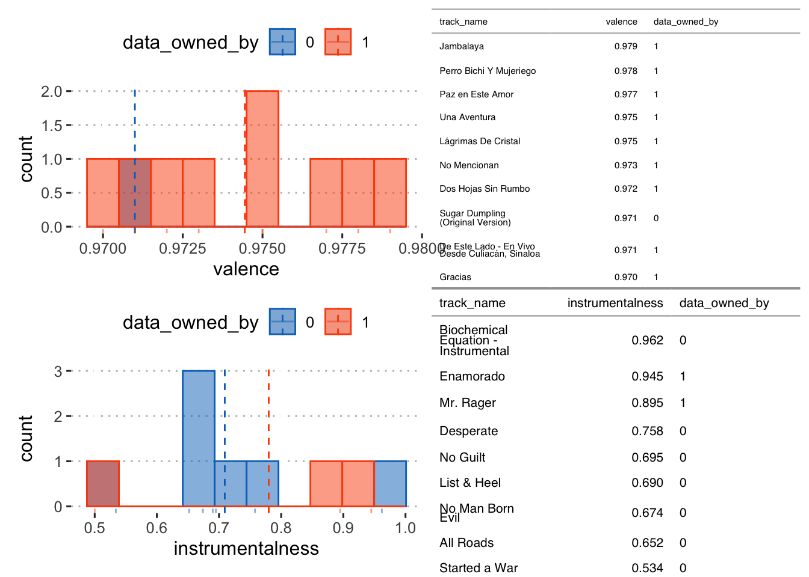
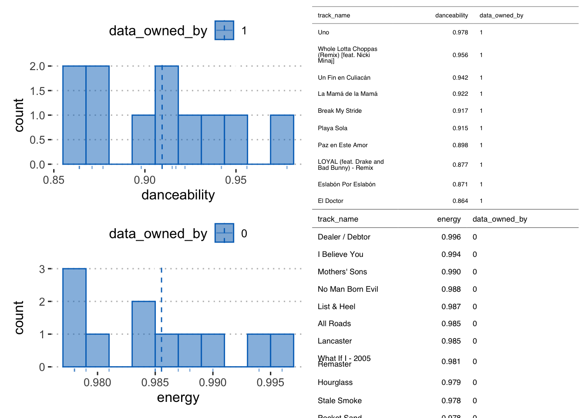
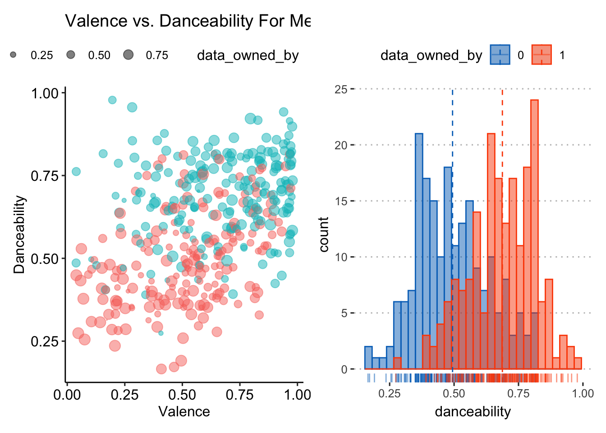

Loading required package: lattice
Attaching package: 'caret'
The following objects are masked from 'package:yardstick':
precision, recall, sensitivity, specificity
The following object is masked from 'package:purrr':
lift
library(corrplot)
corrplot 0.92 loaded
library(flextable)
Attaching package: 'flextable'
The following objects are masked from 'package:ggpubr':
border, font, rotate
The following object is masked from 'package:purrr':
compose
# 0 = Guillermo#1 = Daliladanceability_10 <- danceability_top_ten |>gghistogram( x ="danceability", bins =10,add ="mean", rug =TRUE,color ="data_owned_by", fill ="data_owned_by",palette =c("#0073C2FF", "#FC4E07"))+theme_pubclean()energy_10 <- energy_top_ten |>gghistogram( x ="energy", bins =10,add ="mean", rug =TRUE,color ="data_owned_by", fill ="data_owned_by",palette =c("#0073C2FF", "#FC4E07"))+theme_pubclean()valence_10 <- valence_top_ten |>gghistogram( x ="valence", bins =10,add ="mean", rug =TRUE,color ="data_owned_by", fill ="data_owned_by",palette =c("#0073C2FF", "#FC4E07"))+theme_pubclean()instrument_10 <- instrument_top_ten |>gghistogram( x ="instrumentalness", bins =10,add ="mean", rug =TRUE,color ="data_owned_by", fill ="data_owned_by",palette =c("#0073C2FF", "#FC4E07"))+theme_pubclean()d10 <-flextable(danceability_top_ten)e10 <-flextable(energy_top_ten)v10 <-flextable(valence_top_ten)i10 <-flextable(instrument_top_ten)
((valence_10 +gen_grob(v10, fit ="width", just ="top", scaling ='full')) /(instrument_10 +gen_grob(i10, fit ="width", just ="top", scaling ='full')) )

((danceability_10 +gen_grob(d10, fit ='width', just ="top", scaling ='full')) /(energy_10 +gen_grob(e10, fit ="width", just ="top", scaling ='full')) )

# overall distribution in danceability between twodanceability <- tracks |>gghistogram( x ="danceability", bins =30,add ="mean", rug =TRUE,color ="data_owned_by", fill ="data_owned_by",palette =c("#0073C2FF", "#FC4E07"))+theme_pubclean()danceabilty_valence <- tracks |>ggplot(aes(x = valence, y = danceability, color = data_owned_by, size = energy)) +scale_size(range =c(0, 4)) +geom_count(alpha =0.5) +labs(x="Valence", y="Danceability") +ggtitle("Valence vs. Danceability For Merged Datasets") +theme(plot.title =element_text(face="bold")) +theme(legend.position="bottom") +guides(col=guide_legend(ncol =3)) +theme_pubr()danceabilty_valence + danceability

tracks_merged <- tracks |>select(-track_name)# Create training (70%) and test (30%) sets for the set.seed(123) # for reproducibility (random sample)spotify_split <-initial_split(tracks_merged, prop =0.70)spotify_train <-training(spotify_split)spotify_test <-testing(spotify_split)spotify_split
knn_spec_tune <-nearest_neighbor(neighbors =tune()) |>set_mode("classification") |>set_engine("kknn") # Check the modelknn_spec_tune
K-Nearest Neighbor Model Specification (classification)
Main Arguments:
neighbors = tune()
Computational engine: kknn
knn_fit <- knn_spec_tune %>%fit(data_owned_by ~. , data = spotify_train)
Warning: tune samples were requested but there were 280 rows in the data. 275
will be used.
set.seed(123)# 10-fold CV on the training datasetcv_folds <- spotify_train |>vfold_cv(v =10)
# Define our KNN model with tuning# you can specify neigbors default five, can also put in tune() to tuneknn_spec_tune <-nearest_neighbor(neighbors =tune()) |>set_mode('classification') |>set_engine('kknn')# Check the modelknn_spec_tune
K-Nearest Neighbor Model Specification (classification)
Main Arguments:
neighbors = tune()
Computational engine: kknn
# Define the workflowwf_knn_tune <-workflow() |>add_model(knn_spec_tune) |>add_recipe(spotify_rec)
# Fit the workflow on our predefined folds and hyperparametersfit_knn_cv <- wf_knn_tune |>tune_grid(cv_folds,grid =data.frame(neighbors =c(1,5, seq(10, 100, 10))))# Check the performance with collect_metrics()fit_knn_cv|>collect_metrics()
# Write over 'final_fit' with this last_fit() approachfinal_fit <- final_wf |>last_fit(spotify_split)# Collect metrics on the test data!knn_perf <- final_fit|>collect_metrics()
# Create training (70%) and test (30%) sets for the set.seed(123) # for reproducibility (random sample)spotify_split <-initial_split(tracks_merged, prop =0.70)spotify_train <-training(spotify_split)spotify_test <-testing(spotify_split)spotify_split
#new spec, tell the model that we are tuning hyperparamstree_spec_tune <-decision_tree(cost_complexity =tune(),tree_depth =tune(),min_n =tune()) |>set_engine('rpart') |>set_mode('classification')tree_grid <-grid_regular(cost_complexity(), tree_depth(), min_n(), levels =5)tree_grid
#set up k-fold cv. This can be used for all the algorithmsdecision_cv = spotify_train |>vfold_cv(v=10) #10 standard default lower for computational resources
doParallel::registerDoParallel() #build trees in parallel#200stree_rs <-tune_grid( tree_spec_tune,#specification data_owned_by ~ .,# model functionresamples = decision_cv,#resample specificatongrid = tree_grid,#parameters to trymetrics =metric_set(accuracy) #asses which combination of parameters is best)tree_rs